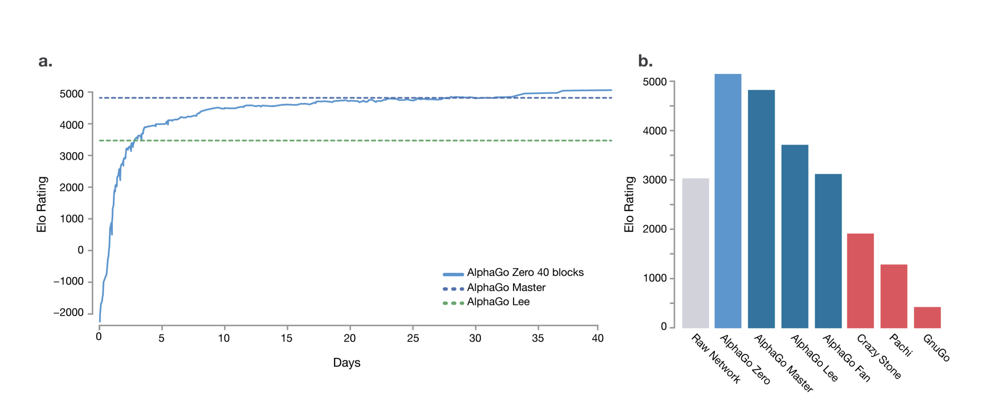

从左到右、一个词接一个词地写作，是智能的必然，还是仅仅属于人类的习惯？如果一种智能可以不按顺序表达——同时落下开头与结尾——它看到的，还会是同一个世界吗？
科幻小说《你一生的故事》中，外星种族七肢桶造访地球，语言学家路易斯·班克斯被军方招募与这些外星来客沟通，以了解他们的来意。在交流过程中路易斯学会了他们的书面语言"七文B"。这种语言的书写方式不像人类语言一样沿着某个方向线形排列，而是以圆环的方式整体涌现。七肢桶在"写"之前，已经知道了所有要表达内容的全貌，随后将整段话一起画出。由该小说改编的科幻电影《降临》形象地展示了七文B的书写过程：
随着交流的深入，路易斯意识到，七肢桶的语言体现了他们感知世界的方式：它们的物理学建立在"目的论"的原则上（类似费马的最短时间原理，光仿佛"预先知道"所要到达的终点），在此基础上它们能同时知道过去，现在与未来。路易斯越来越熟练地掌握七文B，她自身的意识结构也发生了变化。她开始和七肢桶一样，能以非线性的方式体验时间，她开始能"记住"未来，包括她未来女儿的一生。《你一生的故事》既是这本科幻小说的书名，也是路易斯写给女儿的信，在信中，路易斯以第二人称向还未出生的女儿讲述了她一生的种种片段，从孕育、出生、成长到种种生活细节，直到最终的结局。
特德·姜的这本科幻小说包含了两个有趣且重要的观点：1. 语言不仅仅是人交流的工具，人用语言诉说思想，同时语言本身也塑造人认知世界的方式。2. 世界是宿命论的，未来是可预测或者说是"预先知道"的。所谓的过去、现在、将来以及自由意志只是人对世界的感受甚至幻觉。两者合二为一，构成了一个大胆的猜想：人如果改变线性的，因果的说话、书写方式，把语言重塑为整体性的表达，就可以改变看待、认识世界的方式，进而可以同时看到过去，现在和未来。
让我们把视线从科幻小说拉回现实世界，回到大语言模型的话题上。自2022年底ChatGPT问世以来，大语言模型（LLM）迅速成为人工智能领域最重要的成果，其影响力遍布各行各业，同时以飞速向前发展。时至今日，大语言模型的能力早已超出了人们最初的想象。以LLM为核心的agent可以充当日常个人助手（OpenClaw），也可以完成复杂、长程的编程任务（Claude Code、Codex）。基于LLM的推理模型已经触及了数学研究的前沿（2026年5月，OpenAI的通用推理模型自主推翻了数学家保罗·埃尔德什于1946年提出的"单位距离猜想"）。支撑这些摩天大楼的地基，是两项核心技术：1. 基于Transformer架构的序列模型。2. 基于下一个词预测（next token prediction）的训练和推理方法。Transformer模型通过自注意力机制了解序列不同位置元素相互影响的程度；而下一个词预测模拟了人的写作过程：根据已经写完的部分（context），去写接下来的内容。
下一个词预测无疑是一种高效的范式，它使得模型不需要额外的监督信号就能从人类巨量的文本信息中学习，同时做到了训练和推理的自洽。但是大家往往忽略的一点是，下一个词预测本身就是一个极强的假设：当前需要写的词，是由过去已经写完的部分决定的。当前的词决定好后，需要和历史信息合并，去决定未来的词。这种写作方式吻合了人因果推断的思维习惯，由此训练出的语言模型，就是目前主流的大模型：自回归语言模型（AutoRegressive Language Model）。在《你一生的故事》中，正是这种因果思维方式，使得人只能以线性的方式感受时间，过去、现在与未来存在严格的顺序，未来不可知。这一点被原封不动地继承到了自回归模型的建模方式中——自注意力通过因果掩码（causal mask）使得token只能看到排在它之前的token，而无法看到未来。
对于人工智能模型来说，它们并不天生具备人类累积了上千年的对时间流逝的感受，以及在此基础上形成的潜移默化的线性的思考方式；那么这种源自人类因果推断思维惯性的写作范式，对于模型不断提高智能的目标，是一种帮助，还是一种束缚？
为了回答这个问题，我们可以回顾一个在特定领域已经实现了超级智能的模型：围棋领域的AlphaGo-Zero。AlphaGo早期的版本会先对人类棋谱进行模仿学习，再在此基础上进行自我对弈增强能力。而AlphaGo-Zero则完全抛弃了学习人类棋谱的步骤，直接从自我对弈中学习进化。最终AlphaGo-Zero超越了学习人类棋谱的围棋AI，更远远超越了人类棋手。其下棋方式脱离了人类长期累积的经验与定式，甚至反过来给人类棋手提供了新的学习范式。

如果说理查德·萨顿的《苦涩的教训》[1]教给我们的是扩展规模对于AI进化的重要性，那么AlphaGo-Zero的成功教给我们的就是，对于AI的进化，人类的先验知识并不总是可靠的。
当然，AlphaGo-Zero无法直接照搬到语言上：围棋有明确的胜负信号，模型可以在自我对弈中获得监督，从而彻底抛开人类数据；而语言模型至今仍然要从人类文本中学习，谈不上"完全抛弃人类经验"。但类比的真正要点在于：人类先验未必是通往更高智能的必经之路——而"从左到右的生成顺序"，恰恰是我们几乎不加反思就注入模型的先验之一。它来自人类的书写习惯与因果直觉，却未必是智能本身的要求。
不可否认，基于"因果推断"，自回归语言模型可以进一步学习人类"推理"思考的方式，推理模型也确实能够帮助人类解决非常复杂的问题。但是从左到右的推理方式也带来了其内生性的困境：当面对需要全局规划的任务（类似数独），顺序性的局部最优往往并不是最终的全局最优；如果前序推理错误，因果推断会形成累积谬误，这都使得推理过程需要进行试错、回溯。于是，一个非常有趣的可能性浮现出来：当语言模型放弃固定的顺序生成范式，是否也能像AlphaGo-Zero一样，抵达超越人类的思考方式与智能高度？
相比于预测下一个词的自回归语言模型，扩散语言模型为超越人类的智能提供了一个非常有潜力的候选答案，这是一种与"七文B"不谋而合的语言生成方式：扩散语言模型生成文本时并不严格限制从左到右的写作顺序，整段内容通过"去噪"的方式整体涌现。
具体而言，在训练过程中，扩散语言模型对无标签文本添加噪声，训练目标为从噪声还原出原始文本。在推理过程中，需要生成的文本从噪声一步步显影为最终的文本。在这个过程中，模型并不需要遵循从左到右的写作顺序，未来（排在后面的文字）、现在（中间部分）都有可能先于过去（排在前面的）出现。如果把写作过程看作是从"混沌"向"真相"还原的过程，那么，扩散语言模型还原的真相带有一种时间上的平等性与因果无关性，现在、过去与未来可以一同涌现，而不需要像自回归模型一样严格遵守线性的过去、现在、未来的顺序。
或许有人会质疑：文字和语言只是知识和智慧的载体，我们从书本、论文中学习时，学习的是符号背后的信息与思想，和用什么语言读、写没什么关系。但是，"语言能塑造意识"并不仅仅是科幻小说的想象。萨丕尔-沃尔夫假说的弱版本（语言影响思维）有不少实证支持。例如澳大利亚原住民语言 Guugu Yimithirr 不用"左/右"这类以身体为中心的方位词，而总是用东南西北这类绝对方位词，使用者因此发展出异常精准的方向感。海德格尔在《关于人道主义的书信》里说"语言是存在之家"（Die Sprache ist das Haus des Seins）：语言是存在得以澄明、显现（aletheia，去蔽）的场所。对于海德格尔而言，我们栖居其中的语言敞开了一种特定的世界、让存在者以特定方式显现。《你一生的故事》中描述的"七文B"敞开的是一个时间同时在场、未来与现在共显的世界。这与海德格尔所说logos作为"聚集"（Versammlung）的功能：不是线性铺陈，而是把一个整全一举带入敞开，有着异曲同工之妙。我们对于智慧乃至整个世界的认识都仍然是浅薄的——智能迄今为止尚未有一个准确的定义。在这种情况下，我们有理由认真对待这样一种可能性：非线性的、非因果的语言，有可能能带来一种不同于人类、甚至超越人类的对于世界的认知。
诚然，扩散语言模型并不构建全新的语言，仍然需要从人类文本中学习，它最终产出的，也还是线性排列的人类文字。但是别忘了，路易斯写给女儿的那封信，仍然是一行行从左到右的英文；但写下这封信的那个意识，已经彻底不同了。对于一个模型而言，它的"认知"恰恰就存在于计算过程之中：当生成不再被因果掩码所约束，模型看待一段文本的方式——哪些部分先确定、哪些部分相互决定——就已经和自回归模型根本不同了。
即使暂时搁置扩散语言模型更接近超级智能这样形而上的假设，现有的扩散语言模型也已经展现出了不可忽视的实用价值与应用潜力：
- 数据受限情况下更高的学习上限：论文 Diffusion Language Models are Super Data Learners[2] 揭示：当训练数据不得不重复时，扩散语言模型相比自回归语言模型会更加难过拟合，并且会有着更高的学习能力上限。模型参数的规模在不断扩展，当数据扩展的速度放缓甚至停滞时，扩散语言有可能能通过重复学习达到更高的智能水平。
- 本地部署时更快的推理速度：当模型本地部署推理时，同一时间往往只会有一条推理请求（即所谓batch-1推理）。自回归语言模型一次前向计算只生成一个token，这种情况下芯片的计算单元利用效率低，推理延迟反而更多受到显存带宽的限制。扩散语言模型一次前向计算会生成多个token，提高了计算单元的利用效率，也有着更快的推理速度。根据 DiffusionGemma 官方博客[3]的结果，同样的芯片与模型大小，batch-1推理任务上扩散语言模型的速度是自回归语言模型的四倍。
- 为多模态提供统一的连续建模范式：自回归语言模型想融入其他模态（视觉、音频等）时，为了统一到下一个词预测的范式，需要对其他模态表征作离散化处理，这个建模过程不可避免会有信息的损失。随着连续扩散语言模型的不断发展，扩散模型为语言、视觉、音频提供了统一的连续表征上的建模范式；扩散模型在图像、音频、视频生成的技巧也有泛化的空间，从而提供了更快速度、更高质量的多模态生成的可能性。
预测未来一直是人类对终极智慧的想象。而扩散语言模型，从语言表达方式对意识塑造的角度提供了另一种感知世界的可能性。或许在电子信号的果壳之中，真的可以生长出能在时间不同方向自由行走，探索无限宇宙的超级智能。
评论